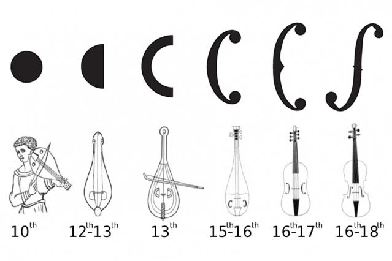

Brief History of the Violin
The violin is a descendant from the Viol family of instruments. This includes any stringed instrument that
is fretted and/or bowed. It predecessors include the medieval fiddle, rebec, and lira da braccio. We can assume
by paintings from that era, that the three string violin was in existence by at least 1520. By 1550, the top E
string had been added and the Viola and Cello had emerged as part of the family of bowed string instruments still
in use today.
It is thought by many that the violin probably went through its greatest transformation in Italy from 1520 through
1650. Famous violin makers such as the Amati family were pivotal in establishing the basic proportions of the
violin, viola, and cello. This family’s contributions to the art of violin making were evident not only in the
improvement of the instrument itself, but also in the apprenticeships of subsequent gifted makers including Andrea
Guarneri, Francesco Rugeri, and Antonio Stradivari.
Stradivari, recognized as the greatest violin maker in history, went on to finalize and refine the violin’s form
and symmetry. Makers including Stradivari, however, continued to experiment through the 19th century with archings,
overall length, the angle of the neck, and bridge height. As violin repertoire became more demanding, the instrument
evolved to meet the requirements of the soloist and larger concert hall. The changing styles in music played off of
the advancement of the instrument and visa versa.

In the 19th century, the modern violin became established. The modern bow had been invented by Francois Tourte
(1747-1835). Its weight, length, and balance allowed the player to produce power and brilliance in the higher
ranges. It was Louis Spohr’s invention of the chin rest around 1820 that made it possible for the player to hold
the violin comfortably and play in the higher positions. Spohr’s chin rest also resulted in the significant
advancement of playing technique and allowed the violin repertoire to reach its virtuoso level. The advent of the
shoulder rest (no known date) was also an important contribution to the ease of playing.
Players in Bach’s day held the violin by placing a chamois on their shoulder so the violin would not slip, but
stay in place by gentle pressure from the chin and shoulder. The instrument was angled towards the floor constricting
movement of the arm underneath the neck and thereby prohibiting playing in the upper positions. The Bach E Major Violin
Concerto was composed at a time (ca. 1720) when the violin had no chin or shoulder rest, had a shorter fingerboard, and
was strung entirely of gut strings. Players also used little or no vibrato. All this combined with the bow in use
(shorter and lighter than the present day Tourte bow), made for a soft, muddy, rough sound. Today’s performances sound
louder in volume, but softer in texture. The sound has a brilliance and clarity to it that would not have been possible
in Bach’s day.
Despite the fact that violins in Bach’s time were not “modern” by today’s standards, his solo string instrument
compositions are some of the most challenging repertoire for any serious student of the violin, viola, or cello.